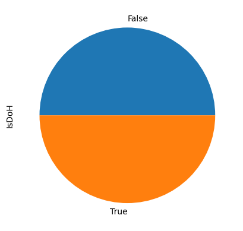

from detect_common import *Choose model
0.1 Evaluate models on concept drift robustness
Now we have generated models with different hyperparameters:
- normalization (on/off)
- skip packets for inter-packet duration statistics
- skip packets for packet sizes statistics
- apply weight on inter-packet duration statistics
- apply weight on packet sizes statistics
Merge test set (20% split from the training set) with the benign traffic from the training part (B1 stored in v5_1.csv) generated on Android devices
p1version = "v6"
p2version = "v7"
p3version = "v5"test_df_p = pd.read_feather(f'cached/mixed.test.p1.{p1version}.saved')df = pd.read_feather("cached/v5_1.ft")
non_doh = df[df["ipaddr SRC_IP"] == "192.168.2.249"]
some_doh = df[df["ipaddr SRC_IP"] == "192.168.2.149"]path_doh_ips_androids = basepath + "datasets/flubot20230323/data/v5_benign_doh_ips.csv"
path_doh_ips_general = "doh_resolver_ip.csv"
full_list = get_doh_ips(path_doh_ips_androids) + get_doh_ips(path_doh_ips_general)
cp = CacheableProcessing(100, 100, full_list)
non_doh_p = cp.process(non_doh, f"cached/non_doh.p3.{p3version}.saved")
some_doh_p = cp.process(some_doh, f"cached/some_doh.p3.{p3version}.saved")len(some_doh_p[some_doh_p["IsDoH"] == True])155import matplotlib.pyplot as plt
fig, axs = plt.subplots(ncols=2, figsize=(12, 4))
some_doh_p["IsDoH"].value_counts().plot(kind="pie", ax=axs[0])
non_doh_p["IsDoH"].value_counts().plot(kind="pie", ax=axs[1])
plt.plot()[]android_joined = pd.concat([some_doh_p, non_doh_p])
len(android_joined)17598test_df_p["IsDoH"].value_counts()False 40977
True 29023
Name: IsDoH, dtype: int64android_joined["IsDoH"].value_counts()False 17443
True 155
Name: IsDoH, dtype: int64Balance dataset by oversampling the DoH class
android_doh = android_joined[android_joined["IsDoH"] == True].sample(n=5000, replace=True, random_state=42)
android_non_doh = android_joined[android_joined["IsDoH"] == False].sample(n=5000, replace=True, random_state=42)
test_df_doh = test_df_p[test_df_p["IsDoH"] == True].sample(n=5000, replace=True, random_state=42)
test_df_non_doh = test_df_p[test_df_p["IsDoH"] == False].sample(n=5000, replace=True, random_state=42)Mix test dataset and benign data collected from Android
balanced_mix = pd.concat([
android_doh, android_non_doh, test_df_doh, test_df_non_doh
]).reset_index(drop=True)
balanced_mix = balanced_mix
len(balanced_mix)20000balanced_mix["IsDoH"].value_counts().plot(kind="pie")
plt.plot()[]
balanced_mix.reset_index(drop=True).to_feather(f'cached/robustness.balanced_mix.p3.{p3version}.ft')Now we have a dataset which contains from
- 25% of DoH traffic from the training environment
- 25% of non-DoH traffic from the training environment
- 25% of DoH traffic from the production environment
- 25% of non-DoH traffic from the production environment
from joblib import dump, load
from sklearn import metrics
test = pd.read_feather(f'cached/robustness.balanced_mix.p3.{p3version}.ft')
models = ["LR", "HGB", "RF"]
results = {
"model": [],
"normed": [],
"skips_and_weights": [],
"test_data_auc": [],
"fpr": [],
"tpr": [],
"thresholds": [],
}
for norm in [True, False]:
for hyperparam in HYPERPARAMS:
pp = PreProcessing(norm, *hyperparam)
name = (
('normed-' if norm else 'unnormed-') +
'-'.join(str(p) for p in hyperparam)
)
print(name)
full, features, labels = pp.process(test, f"cached/robustness.balanced_mix.p3.{p3version}.{name}.saved")
for model in models:
clf = load(f'models/{model}-mix-1-p-{name}.p1.{p1version}.p2.{p2version}.joblib')
y_pred = clf.predict_proba(features)[:, 1]
fpr, tpr, threshold = metrics.roc_curve(labels, y_pred)
auc = round(metrics.roc_auc_score(labels, y_pred), 4)
results["model"].append(model)
results["normed"].append(norm)
results["skips_and_weights"].append(hyperparam)
results["test_data_auc"].append(auc)
results["fpr"].append(fpr)
results["tpr"].append(tpr)
results["thresholds"].append(threshold)normed-0-0-0-0normed-1-0-0-0normed-2-0-0-0normed-4-0-0-0normed-6-0-0-0normed-0-4-0-0normed-1-4-0-0normed-2-4-0-0normed-1-0-1-0normed-2-0-2-0normed-4-0-4-0normed-6-0-6-0results_df = pd.DataFrame(results)
results_df.sort_values("test_data_auc", ascending=False)| model | normed | skips_and_weights | test_data_auc | fpr | tpr | thresholds | |
|---|---|---|---|---|---|---|---|
| 53 | RF | False | [2, 0, 0, 0] | 0.9780 | [0.0, 0.0, 0.0, 0.0001079447322970639, 0.00010... | [0.0, 0.3485738255033557, 0.3976510067114094, ... | [2.0, 1.0, 0.99, 0.98, 0.97, 0.96, 0.95, 0.94,... |
| 68 | RF | False | [2, 4, 0, 0] | 0.9761 | [0.0, 0.0, 0.0, 0.0001079447322970639, 0.00021... | [0.0, 0.34133808724832215, 0.3921979865771812,... | [2.0, 1.0, 0.99, 0.98, 0.97, 0.96, 0.95, 0.94,... |
| 86 | RF | False | [1, 4, 1, 4] | 0.9753 | [0.0, 0.0, 0.0, 0.0002158894645941278, 0.00021... | [0.0, 0.3493078859060403, 0.39890939597315433,... | [2.0, 1.0, 0.99, 0.98, 0.97, 0.96, 0.95, 0.94,... |
| 74 | RF | False | [2, 0, 2, 0] | 0.9750 | [0.0, 0.0, 0.0, 0.0, 0.0, 0.0, 0.0001079447322... | [0.0, 0.3475251677852349, 0.40058724832214765,... | [2.0, 1.0, 0.99, 0.98, 0.97, 0.96, 0.95, 0.94,... |
| 65 | RF | False | [1, 4, 0, 0] | 0.9748 | [0.0, 0.0, 0.0002158894645941278, 0.0004317789... | [0.0, 0.35245385906040266, 0.4047818791946309,... | [2.0, 1.0, 0.99, 0.98, 0.97, 0.96, 0.95, 0.94,... |
| ... | ... | ... | ... | ... | ... | ... | ... |
| 9 | LR | True | [4, 0, 0, 0] | 0.7774 | [0.0, 0.0, 0.0, 0.0, 0.0002158894645941278, 0.... | [0.0, 0.00020973154362416107, 0.00062919463087... | [1.9999999999999998, 0.9999999999999998, 0.999... |
| 30 | LR | True | [4, 0, 4, 0] | 0.7632 | [0.0, 0.0003238341968911917, 0.000431778929188... | [0.0, 0.00041946308724832214, 0.00041946308724... | [2.0, 1.0, 0.9999999999928075, 0.9999999995543... |
| 57 | LR | False | [6, 0, 0, 0] | 0.7533 | [0.0, 0.0, 0.0, 0.0, 0.0, 0.000107944732297063... | [0.0, 0.00010486577181208053, 0.00041946308724... | [2.0, 1.0, 0.9993612180547663, 0.9989779662126... |
| 78 | LR | False | [6, 0, 6, 0] | 0.7397 | [0.0, 0.0, 0.0, 0.0, 0.0002158894645941278, 0.... | [0.0, 0.00010486577181208053, 0.00031459731543... | [1.999999999996223, 0.999999999996223, 0.99969... |
| 33 | LR | True | [6, 0, 6, 0] | 0.6265 | [0.0, 0.0, 0.0001079447322970639, 0.0001079447... | [0.0, 0.00010486577181208053, 0.00010486577181... | [1.5903804330127818, 0.5903804330127819, 0.513... |
90 rows x 7 columns
results_df.to_feather(f'cached/robustness.balanced_mix-results.p3.{p3version}.ft')from sklearn import metrics
import matplotlib.pyplot as plt
results_df = pd.read_feather(f"cached/robustness.balanced_mix-results.p3.{p3version}.ft")
for model in models:
fig, axs = plt.subplots(ncols=2, figsize=(12, 4))
for i, norm in enumerate([True, False]):
for index, row in results_df[
(results_df["model"] == model) & (results_df["normed"] == norm)
].iterrows():
axs[i].plot(
row["fpr"],
row["tpr"],
label=f"{row['model']} {'normed' if row['normed'] else 'unnormed'} {','.join([str(i) for i in row['skips_and_weights']])} AUC: {row['test_data_auc']}",
)
axs[i].legend()
axs[i].set_title(f"{model} {'normed' if norm else 'unnormed'}")
plt.show()
best_normed_model = results_df[results_df["normed"] == True].sort_values("test_data_auc", ascending=False).iloc[:3]
best_unnormed_model = results_df[results_df["normed"] == False].sort_values("test_data_auc", ascending=False).iloc[:3]0.2 Results
Top 3 normalized and top 3 non-normalized models ranged by the AUC:
best_normed_model| model | normed | skips_and_weights | test_data_auc | fpr | tpr | thresholds | |
|---|---|---|---|---|---|---|---|
| 23 | RF | True | [2, 4, 0, 0] | 0.9355 | [0.0, 0.0, 0.0, 0.0, 0.0, 0.0, 0.0, 0.00010794... | [0.0, 0.00010486577181208053, 0.00031459731543... | [1.98, 0.98, 0.97, 0.96, 0.95, 0.94, 0.92, 0.9... |
| 44 | RF | True | [2, 4, 2, 4] | 0.9324 | [0.0, 0.0, 0.0, 0.0, 0.0, 0.000107944732297063... | [0.0, 0.00041946308724832214, 0.00094379194630... | [2.0, 1.0, 0.99, 0.98, 0.97, 0.96, 0.95, 0.94,... |
| 5 | RF | True | [1, 0, 0, 0] | 0.9278 | [0.0, 0.0, 0.0, 0.0, 0.0001079447322970639, 0.... | [0.0, 0.00010486577181208053, 0.00020973154362... | [2.0, 1.0, 0.99, 0.98, 0.97, 0.95, 0.93, 0.92,... |
best_unnormed_model| model | normed | skips_and_weights | test_data_auc | fpr | tpr | thresholds | |
|---|---|---|---|---|---|---|---|
| 53 | RF | False | [2, 0, 0, 0] | 0.9780 | [0.0, 0.0, 0.0, 0.0001079447322970639, 0.00010... | [0.0, 0.3485738255033557, 0.3976510067114094, ... | [2.0, 1.0, 0.99, 0.98, 0.97, 0.96, 0.95, 0.94,... |
| 68 | RF | False | [2, 4, 0, 0] | 0.9761 | [0.0, 0.0, 0.0, 0.0001079447322970639, 0.00021... | [0.0, 0.34133808724832215, 0.3921979865771812,... | [2.0, 1.0, 0.99, 0.98, 0.97, 0.96, 0.95, 0.94,... |
| 86 | RF | False | [1, 4, 1, 4] | 0.9753 | [0.0, 0.0, 0.0, 0.0002158894645941278, 0.00021... | [0.0, 0.3493078859060403, 0.39890939597315433,... | [2.0, 1.0, 0.99, 0.98, 0.97, 0.96, 0.95, 0.94,... |
Interestingly, in this comparison normalization makes model perform worse. However, it doesn’t matches the original hypothesis. Let’s take both normed and unnormed models and try to use them on the production data.
2023-03-08-flubot-multiple-nodes - Choose model 2023-03-08-flubot-multiple-nodes - Choose model 2023-03-08-flubot-multiple-nodes - Choose model 2023-03-08-flubot-multiple-nodes